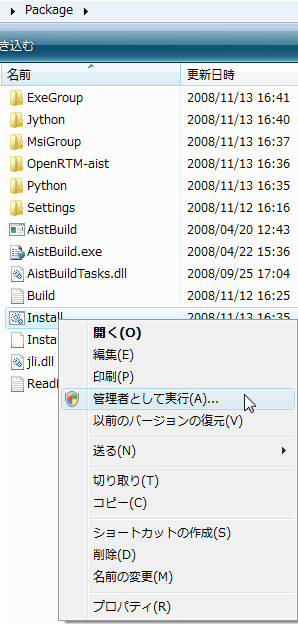
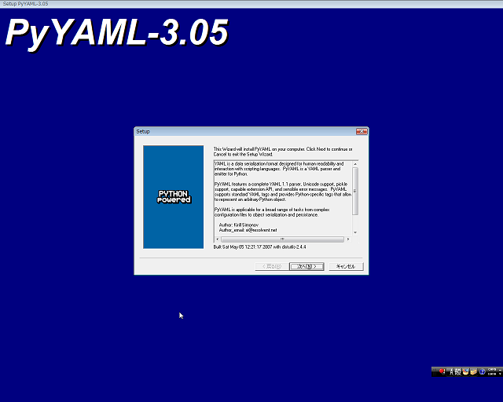
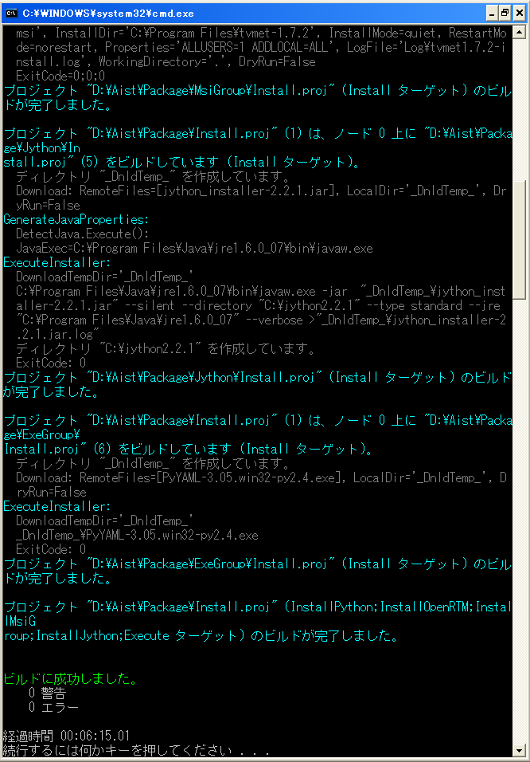
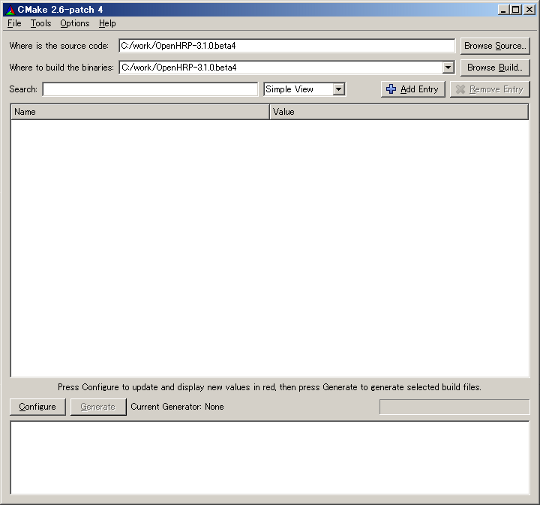
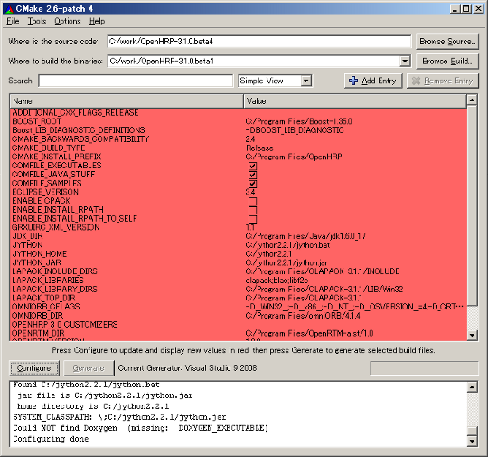
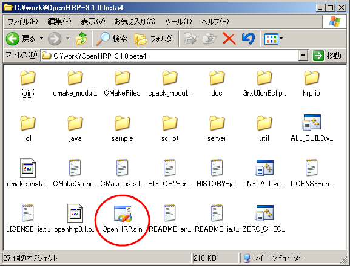
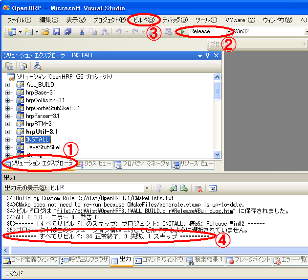
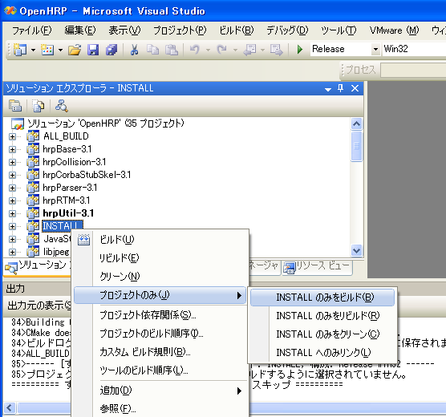

目次
通常のインストール手順です。本ページで説明いたします。
OpenHRP3 および GrxUI の動作をお試しいただくことが可能なバイナリを Windows Installer で提供いたします。 インストール前確認Name Serverが正常起動しなくなる恐れがありますので、コンピュータ名を半角８文字以内に設定してください。 詳細についてはこちらをご覧ください。 コンパイル環境の準備まず、以下の手順で OpenHRPのコンパイル/実行に必要なソフトウェア をインストールしていきます。
64bitのOSでは、32bit用のソフトウェアも動作しますが、32bit用か64bit用かのどちらかのOpenHRPを選択し、実行に必要なソフトウェアで、32bit用と64bi用を混在させないで下さい。
いずれのソフトウェアも、バージョン等が合うものをすでにインストールされている場合は、それをお使いいただければ結構です。 Visual C++ コンパイラのインストールWindows 用の C++ コンパイラは Visual C++ 2010, Visual C++ 2008 に対応しています。 マイクロソフトより無償配布されている Express Edition も使用可能です。 Express Edition をご使用の場合、下記のリンクからダウンロードしてインストーラの案内に従って インストールしてください。インストーラの設定項目は特に変更しなくてもOKです。
Visual Studio 2008 Standard Editionの場合にはC++とC#の両方をインストールしてください。 JDK のインストール
http://java.sun.com/のJava SE のダウンロードページより、
JDKのWindows用をダウンロードしてください。 ダウンロードしたファイルを実行すると、JDKのインストーラが起動しますので、 インストーラの案内に従ってインストールしてください。 インストーラの設定項目は特に変更しなくてもOKです。 環境構築インストーラによる依存ソフトウェアの導入依存ソフトウェアをまとめてダウンロード・インストールする環境構築インストーラを配布しております。新規にシステムへ導入される場合、当サイトの 「関連ソフトウェアのダウンロード」にて；
をダウンロードしてご利用ください。 個別にインストールする場合は、OpenHRPのコンパイル/実行に必要なソフトウェアを参考にして、以前のように各個インストールしてください。
Package-1.2.2_***.zipをダウンロードして解凍するとPackageディレクトリが展開されます。 .¥Package¥Install.cmd
を実行すれば依存ソフトウェアをダウンロードしてインストールします。
 途中図２のPyYAMLのインストーラーがGUIとして起動します。 特に設定項目を変更する必要はないのでデフォルトのまま"次へ"のボタンや"完了"ボタンを押下してください。
 インストールが正常に終了すると、

のように表示して終了します。 以上の作業でインストールされる依存ソフトウェアは以下の通りです。
CMakeのインストール
cmake からWindwos用の2.8系の最新版を選びダウンロードし、インストールします。 OpenHRP3パッケージの展開当サイトの「OpenHRP3 本体のダウンロード」 で承諾ボタンを押下していただいて、OpenHRP3のソースアーカイブをダウンロードし適当なディレクトリ に解凍してください。
注意： コンパイルCMakeの実行スタートメニューから ［すべてのプログラム］-> [CMake 2.x] -> [CMake (cmake-gui)] を選択して CMake を起動します。

ダイアログが閉じるとプロジェクトの構成を始めます。構成が終了しますと図６のように各変数名とその値の一覧が赤いバッググラウンドで表示されます。変数を確認して必要があれば変数を変更してください。
 ※ JDK1.7.0_21以降を使用されている方は、インストール先をスペースを含まないディレクトリに変更して下さい。 ※ OpenRTMが複数インストールされている場合、どのOpenRTMに依存するかは検索順で決まるため、明示的にOPENRTM_DIRを指定する必要があります。 変数を確認して問題がなければ、もう一度"Configure"ボタンをクリックしてください。 エラーがなければ各変数のバックグラウンドが白色になり"Generate"ボタンが活性化されますので、活性化された"Generate"ボタンをクリックしてください。プロジェクトファイル(OpenHRP.sln)がお使いの環境に合わせて生成されます。 Visual C++ によるコンパイルソリューションファイルのオープンOpenHRPを展開したディレクトリに移動して、 OpenHRP.slnを開きます（図７）。
 ビルドの実行プロパティを正しく設定できたら、以下のようにしてビルド（コンパイル）できます。

最後に、
 図９のようにINSTALLプロジェクトのポップアップメニューから実行します。 ポップアップメニュの起動は以下の手順となります。
注意：
Eclipse および GrxUI on EclipseプラグインのインストールEclipseのインストール
GrxUIはEclipseのプラグインです。現在のバージョンはEclipse3.4に対応しています。
注意： GrxUI on EclipseプラグインのインストールGrxUI on Eclipseプラグインのインストールは、コンパイル済みのGrxUIプラグインをインストールする方法とEclipseでソースからコンパイルしてインストールする方法がございます。 コンパイル済みのGrxUIプラグインのインストール
コンパイル済みのjarファイルをEclipseにインストールする方法です。 ソースからGrxUIプラグインを作成してインストールEclipse の起動GrxUIの起動・初期設定に従って、Eclipseを起動してください。Eclipse の設定
ワークスペースのエンコーディング設定を行います。 GrxUIプラグインのインポート・コンパイル・エクスポート・インストールインポート
メニューから"ウインドウ"→"パースペクティブを開く"→"その他"を選択します。
メニューから"ファイル"→"インポート"を選択してダイアログを開き、"一般"の"既存プロジェクトをワークスペースへ"を選択し、"次へ"ボタンを押します。 コンパイル
このあとプロジェクトは自動的にビルドされます。ステータスバーの右下にインジケータが表示され、ビルドが終了すると、表示が消えます。 エクスポート
メニューから"ファイル"→"エクスポート"を選択してダイアログを開き、"プラグイン開発"の"デプロイ可能なプラグインおよびフラグメント"を選択し、"次へ"ボタンを押します。 インストール
Eclipseを一旦終了し、出来上がったGrxUIのプラグインをEclipseのpluginsディレクトリにコピーします。 備考OpenHRP3.1.0β2からの移行
OpenHRP3.1.0β2からbin/dosディレクトリの使用を廃止しましたので、
以前のバージョンから更新されたユーザはCMAKE_INSTALL_PREFIXで
設定したディレクトリ下のbin/dosが削除可能です。 Java 準拠レベル
Javaのコンパイルエラーが発生する場合、Java 準拠レベルがあっていない可能性がございます。 SSE拡張命令
CMake時にデフォルトでSSE拡張命令を有効にするコンパイルオプションを追加しております。 |

{kind=link}